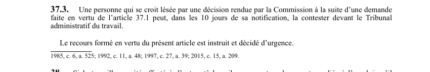

art-37.3-LSST : contestation devant le Tribunal administratif
Un article du wiki ⚖️ Recueil législatif
Texte de l’article (transcription)
Une personne qui se croit lésée par une décision de la Commission rendue à la suite d'une demande faite en vertu de l'article 37.1 peut. Il s'agit d'une obligation.
- Délai de 10 jours.
- Recours instruit et décidé d'urgence.
🌐 LegisQuébec · 📄 PDF officiel (page 13)
Texte officiel : capture du PDF

Toucher l'image pour l'agrandir🔗 Ouvrir a cette page : LSST.pdf : page 13 · texte a jour au 26 mars 2024
Voir aussi
- art. 37.1 : révision décision affectation · faculté : une personne qui se croit lésée par une décision rendue en vertu de l'article 37 peut, dans les 10 jours de sa notification, en demander la révision par la Commission conformément aux articles 358.1 à 358.5 de la Loi sur les accidents du travail et les maladies professionnelles.
- art. 37.2 : urgence révision décision affectation · obligation : la Commission doit procéder d'urgence sur une demande de révision faite en vertu de l'article 37.1 ; la décision rendue a effet immédiatement, malgré qu'elle soit contestée devant le Tribunal administratif du travail.
- art. 38 : avantages conservés lors de l'affectation · obligation : si le travailleur a été affecté à d'autres tâches, il conserve tous les avantages liés à l'emploi qu'il occupait avant cette affectation ; à la fin de l'affectation, l'employeur doit le réintégrer dans son emploi régulier.
- art. 39 : avantages conservés lors cessation · si le travailleur a cessé de travailler, il conserve tous les avantages liés à son emploi, sous réserve des dispositions de l'article 36, et ce pendant un an suivant la date de cessation de travail.
- ↑ Loi : LSST
Pages qui pointent ici (4)
- art-37.1-LSST : révision décision affectation Recueil législatif
- art-37.2-LSST : urgence révision décision affectation Recueil législatif
- art-38-LSST : avantages conservés lors de l'affectation Recueil législatif
- art-39-LSST : avantages conservés lors cessation Recueil législatif